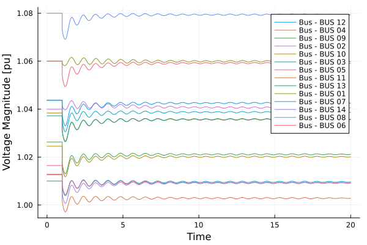
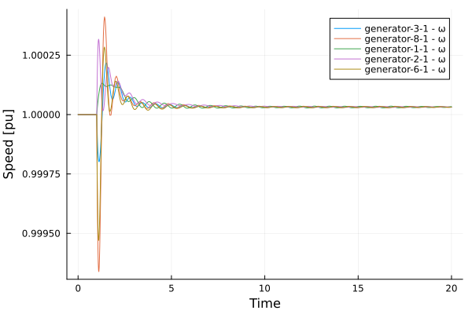
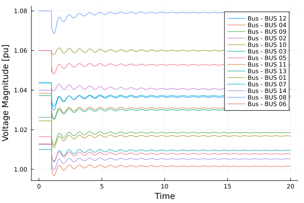

Inverter Modeling simulation
Originally Contributed by: José Daniel Lara
Introduction
This tutorial will introduce the modeling of an inverter with Virtual Inertia in a multi-machine model of the system. We will load the data directly from PSS/e dynamic files.
The tutorial uses a modified 14-bus system on which all the synchronous machines have been substituted by generators with ESAC1A AVR's and no Turbine Governors.
In the first portion of the tutorial we will simulate the system with the original data and cause a line trip between Buses 2 and 4. In the second part of the simulation, we will switch generator 6 with a battery using an inverter and perform the same fault.
Load the packages
julia> using PowerSimulationsDynamicsjulia> using PowerSystemCaseBuilderjulia> using PowerSystemsjulia> const PSY = PowerSystemsPowerSystemsjulia> using PowerFlowsjulia> using Loggingjulia> using Sundialsjulia> using Plots
PowerSystemCaseBuilder.jl is a helper library that makes it easier to reproduce examples in the documentation and tutorials. Normally you would pass your local files to create the system data instead of calling the function build_system. For more details visit PowerSystemCaseBuilder Documentation
Create the system using PowerSystemCaseBuilder.jl:
julia> sys = build_system(PSIDSystems, "14 Bus Base Case")System ┌───────────────────┬─────────────┐ │ Property │ Value │ ├───────────────────┼─────────────┤ │ Name │ │ │ Description │ │ │ System Units Base │ SYSTEM_BASE │ │ Base Power │ 100.0 │ │ Base Frequency │ 60.0 │ │ Num Components │ 77 │ └───────────────────┴─────────────┘ Static Components ┌─────────────────┬───────┬────────────────────────┬───────────────┐ │ Type │ Count │ Has Static Time Series │ Has Forecasts │ ├─────────────────┼───────┼────────────────────────┼───────────────┤ │ ACBus │ 14 │ false │ false │ │ Arc │ 20 │ false │ false │ │ Area │ 1 │ false │ false │ │ Line │ 16 │ false │ false │ │ LoadZone │ 1 │ false │ false │ │ StandardLoad │ 11 │ false │ false │ │ TapTransformer │ 3 │ false │ false │ │ ThermalStandard │ 5 │ false │ false │ │ Transformer2W │ 1 │ false │ false │ └─────────────────┴───────┴────────────────────────┴───────────────┘ Dynamic Components ┌──────────────────┬───────┐ │ Type │ Count │ ├──────────────────┼───────┤ │ DynamicGenerator │ 4 │ │ DynamicGenerator │ 1 │ └──────────────────┴───────┘
PowerSystemCaseBuilder.jl is a helper library that makes it easier to reproduce examples in the documentation and tutorials. Normally you would pass your local files to create the system data.
Define Simulation Problem with a 20 second simulation period and the branch trip at t = 1.0:
julia> sim = Simulation( ResidualModel, #Type of model used sys, #system mktempdir(), #path for the simulation output (0.0, 20.0), #time span BranchTrip(1.0, Line, "BUS 02-BUS 04-i_1"); console_level = Logging.Info, )Iter f(x) inf-norm Step 2-norm ------ -------------- -------------- Simulation Summary ┌─────────────────────────┬────────────────┐ │ Property │ Value │ ├─────────────────────────┼────────────────┤ │ Status │ BUILT │ │ Simulation Type │ Residual Model │ │ Initialized? │ No │ │ Multimachine system? │ Yes │ │ Time Span │ (0.0, 20.0) │ │ Number of States │ 86 │ │ Number of Perturbations │ 1 │ └─────────────────────────┴────────────────┘
Now that the system is initialized, we can verify the system states for potential issues.
julia> show_states_initial_value(sim)Voltage Variables ==================== BUS 01 ==================== Vm 1.06 θ 0.0 ==================== BUS 02 ==================== Vm 1.04 θ -0.0711 ==================== BUS 03 ==================== Vm 1.01 θ -0.1787 ==================== BUS 04 ==================== Vm 1.0129 θ -0.1458 ==================== BUS 05 ==================== Vm 1.0165 θ -0.1235 ==================== BUS 06 ==================== Vm 1.06 θ -0.1949 ==================== BUS 07 ==================== Vm 1.0438 θ -0.1812 ==================== BUS 08 ==================== Vm 1.08 θ -0.1656 ==================== BUS 09 ==================== Vm 1.0263 θ -0.2102 ==================== BUS 10 ==================== Vm 1.0245 θ -0.2125 ==================== BUS 11 ==================== Vm 1.0384 θ -0.2059 ==================== BUS 12 ==================== Vm 1.0436 θ -0.2105 ==================== BUS 13 ==================== Vm 1.0372 θ -0.2119 ==================== BUS 14 ==================== Vm 1.0126 θ -0.2291 ==================== ==================== Differential States generator-3-1 ==================== eq_p 1.0649 ed_p 0.1243 ψ_kd 0.9872 ψ_kq 0.2132 δ 0.034 ω 1.0 Vm 1.01 Vr1 0.006 Vr2 2.419 Ve 1.791 Vr3 -0.0726 ==================== Differential States generator-8-1 ==================== eq_p 1.2657 ed_p 0.0462 ψ_kd 1.1584 ψ_kq 0.1748 δ 0.019 ω 1.0 Vm 1.08 Vr1 0.0097 Vr2 3.9162 Ve 2.8839 Vr3 -0.1175 ==================== Differential States generator-1-1 ==================== eq_p 1.0604 ed_p -0.0111 ψ_kd 1.0563 ψ_kq 0.1134 δ 0.1684 ω 1.0 Vm 1.06 Vr1 0.0049 Vr2 1.951 Ve 1.4049 Vr3 -0.0585 x_g1 0.3144 x_g2 0.3144 x_g3 0.3144 ==================== Differential States generator-2-1 ==================== eq_p 1.1038 ed_p 0.1491 ψ_kd 1.003 ψ_kq 0.2748 δ 0.1963 ω 1.0 Vm 1.04 Vr1 0.0071 Vr2 2.8613 Ve 2.1338 Vr3 -0.0858 ==================== Differential States generator-6-1 ==================== eq_p 1.167 ed_p 0.0955 ψ_kd 1.08 ψ_kq 0.3084 δ 0.1387 ω 1.0 Vm 1.06 Vr1 0.0082 Vr2 3.2875 Ve 2.4472 Vr3 -0.0986 ====================
We execute the simulation with an additional tolerance for the solver set at 1e-8:
julia> execute!(sim, IDA(); abstol = 1e-8)SIMULATION_FINALIZED::STATUS = 6
Using PowerSimulationsDynamics tools for exploring the results, we can plot all the voltage results for the buses:
julia> result = read_results(sim)Simulation Results Summary ┌────────────────────────────┬─────────────┐ │ Property │ Value │ ├────────────────────────────┼─────────────┤ │ System Base Power [MVA] │ 100.0 │ │ System Base Frequency [Hz] │ 60.0 │ │ Time Span │ (0.0, 20.0) │ │ Total Time Steps │ 342 │ │ Number of States │ 86 │ │ Total solve time │ 1.557656899 │ └────────────────────────────┴─────────────┘julia> p = plot();julia> for b in get_components(ACBus, sys) voltage_series = get_voltage_magnitude_series(result, get_number(b)) plot!( p, voltage_series; xlabel = "Time", ylabel = "Voltage Magnitude [pu]", label = "Bus - $(get_name(b))", ); end

We can also explore the frequency of the different generators
julia> p2 = plot();julia> for g in get_components(ThermalStandard, sys) state_series = get_state_series(result, (get_name(g), :ω)) plot!( p2, state_series; xlabel = "Time", ylabel = "Speed [pu]", label = "$(get_name(g)) - ω", ); end

It is also possible to explore the small signal stability of this system we created.
julia> res = small_signal_analysis(sim)The system is small signal stable
The eigenvalues can be explored
julia> res.eigenvalues58-element Vector{ComplexF64}: -1000.0000000000009 + 0.0im -1000.0000000000006 + 0.0im -1000.0000000000005 + 0.0im -1000.0000000000002 + 0.0im -999.9999999999994 + 0.0im -51.8336437195576 + 0.0im -51.70455018825636 + 0.0im -51.44437441320372 - 0.018220782843113438im -51.44437441320372 + 0.018220782843113438im -51.41020350332119 + 0.0im ⋮ -0.8293800767696595 - 0.04428569213206042im -0.8293800767696595 + 0.04428569213206042im -0.6362034818550809 + 0.0im -0.5 + 0.0im -0.4682884182384499 + 0.0im -0.28233919601444385 + 0.0im -0.2291061939257908 - 7.684635708748412im -0.2291061939257908 + 7.684635708748412im 0.0 + 0.0im
Modifying the system and adding storage
Reload the system for this example:
julia> sys = build_system(PSIDSystems, "14 Bus Base Case") # We want to remove the generator 6 and the dynamic component attached to it.System ┌───────────────────┬─────────────┐ │ Property │ Value │ ├───────────────────┼─────────────┤ │ Name │ │ │ Description │ │ │ System Units Base │ SYSTEM_BASE │ │ Base Power │ 100.0 │ │ Base Frequency │ 60.0 │ │ Num Components │ 77 │ └───────────────────┴─────────────┘ Static Components ┌─────────────────┬───────┬────────────────────────┬───────────────┐ │ Type │ Count │ Has Static Time Series │ Has Forecasts │ ├─────────────────┼───────┼────────────────────────┼───────────────┤ │ ACBus │ 14 │ false │ false │ │ Arc │ 20 │ false │ false │ │ Area │ 1 │ false │ false │ │ Line │ 16 │ false │ false │ │ LoadZone │ 1 │ false │ false │ │ StandardLoad │ 11 │ false │ false │ │ TapTransformer │ 3 │ false │ false │ │ ThermalStandard │ 5 │ false │ false │ │ Transformer2W │ 1 │ false │ false │ └─────────────────┴───────┴────────────────────────┴───────────────┘ Dynamic Components ┌──────────────────┬───────┐ │ Type │ Count │ ├──────────────────┼───────┤ │ DynamicGenerator │ 4 │ │ DynamicGenerator │ 1 │ └──────────────────┴───────┘julia> thermal_gen = get_component(ThermalStandard, sys, "generator-6-1")generator-6-1 (ThermalStandard): name: generator-6-1 available: true status: true bus: BUS 06 (ACBus) active_power: 0.15 reactive_power: 0.14800000000000002 rating: 99.99028802838804 active_power_limits: (min = -99.99, max = 99.99) reactive_power_limits: (min = -0.06, max = 0.24) ramp_limits: (up = 24.9975, down = 24.9975) operation_cost: ThreePartCost base_power: 25.0 time_limits: nothing must_run: false prime_mover_type: PrimeMovers.OT = 19 fuel: ThermalFuels.OTHER = 14 services: 0-element Vector{Service} time_at_status: 10000.0 dynamic_injector: generator-6-1 (DynamicGenerator{RoundRotorQuadratic, SingleMass, ESAC1A, TGFixed, PSSFixed}) ext: Dict{String, Any}("z_source" => Dict{String, Any}("x" => 0.12, "r" => 0)) time_series_container: InfrastructureSystems.SystemUnitsSettings: base_value: 100.0 unit_system: UnitSystem.SYSTEM_BASE = 0julia> remove_component!(sys, get_dynamic_injector(thermal_gen))julia> remove_component!(sys, thermal_gen) # We can now define our storage device and add it to the systemjulia> storage = GenericBattery( name = "Battery", bus = get_component(Bus, sys, "BUS 06"), available = true, prime_mover = PrimeMovers.BA, active_power = 0.6, reactive_power = 0.16, rating = 1.1, base_power = 25.0, initial_energy = 50.0, state_of_charge_limits = (min = 5.0, max = 100.0), input_active_power_limits = (min = 0.0, max = 1.0), output_active_power_limits = (min = 0.0, max = 1.0), reactive_power_limits = (min = -1.0, max = 1.0), efficiency = (in = 0.80, out = 0.90), )ERROR: UndefKeywordError: keyword argument `prime_mover_type` not assignedjulia> add_component!(sys, storage)ERROR: UndefVarError: `storage` not defined
A good sanity check it running a power flow on the system to make sure all the components are properly scaled and that the system is properly balanced. We can use PowerSystems to perform this check. We can get the results back and perform a sanity check.
julia> res = solve_powerflow(ACPowerFlow(), sys)Dict{String, DataFrames.DataFrame} with 2 entries: "flow_results" => 20×9 DataFrame… "bus_results" => 14×9 DataFrame…julia> res["bus_results"]14×9 DataFrame Row │ bus_number Vm θ P_gen P_load P_net Q_gen ⋯ │ Int64 Float64 Float64 Float64 Float64 Float64 Float64 ⋯ ─────┼────────────────────────────────────────────────────────────────────────── 1 │ 1 1.06 0.0 209.537 0.0 209.537 -0.974255 ⋯ 2 │ 2 1.04 -0.0770544 30.0 21.7 8.3 31.1788 3 │ 3 1.01 -0.188366 20.0 94.2 -74.2 22.6545 4 │ 4 1.01107 -0.158262 0.0 47.8 -47.8 0.0 5 │ 5 1.01415 -0.13611 0.0 7.6 -7.6 0.0 ⋯ 6 │ 6 1.06 -0.230397 0.0 11.2 -11.2 18.3298 7 │ 7 1.04369 -0.19934 0.0 0.0 0.0 0.0 8 │ 8 1.08 -0.183712 10.0 0.0 10.0 22.3421 9 │ 9 1.02727 -0.231347 0.0 29.5 -29.5 0.0 ⋯ 10 │ 10 1.02551 -0.236217 0.0 9.0 -9.0 0.0 11 │ 11 1.03904 -0.235418 0.0 3.5 -3.5 0.0 12 │ 12 1.04357 -0.245043 0.0 6.1 -6.1 0.0 13 │ 13 1.03753 -0.245351 0.0 13.5 -13.5 0.0 ⋯ 14 │ 14 1.01337 -0.255634 0.0 14.9 -14.9 0.0 2 columns omitted
After verifying that the system works, we can define our inverter dynamics and add it to the battery that has already been stored in the system.
julia> inverter = DynamicInverter( name = get_name(storage), ω_ref = 1.0, # ω_ref, converter = AverageConverter(rated_voltage = 138.0, rated_current = 100.0), outer_control = OuterControl( VirtualInertia(Ta = 2.0, kd = 400.0, kω = 20.0), ReactivePowerDroop(kq = 0.2, ωf = 1000.0), ), inner_control = VoltageModeControl( kpv = 0.59, #Voltage controller proportional gain kiv = 736.0, #Voltage controller integral gain kffv = 0.0, #Binary variable enabling the voltage feed-forward in output of current controllers rv = 0.0, #Virtual resistance in pu lv = 0.2, #Virtual inductance in pu kpc = 1.27, #Current controller proportional gain kic = 14.3, #Current controller integral gain kffi = 0.0, #Binary variable enabling the current feed-forward in output of current controllers ωad = 50.0, #Active damping low pass filter cut-off frequency kad = 0.2, ), dc_source = FixedDCSource(voltage = 600.0), freq_estimator = KauraPLL( ω_lp = 500.0, #Cut-off frequency for LowPass filter of PLL filter. kp_pll = 0.084, #PLL proportional gain ki_pll = 4.69, #PLL integral gain ), filter = LCLFilter(lf = 0.08, rf = 0.003, cf = 0.074, lg = 0.2, rg = 0.01), )ERROR: UndefVarError: `storage` not definedjulia> add_component!(sys, inverter, storage)ERROR: UndefVarError: `inverter` not defined
These are the current system components:
julia> sysSystem ┌───────────────────┬─────────────┐ │ Property │ Value │ ├───────────────────┼─────────────┤ │ Name │ │ │ Description │ │ │ System Units Base │ SYSTEM_BASE │ │ Base Power │ 100.0 │ │ Base Frequency │ 60.0 │ │ Num Components │ 75 │ └───────────────────┴─────────────┘ Static Components ┌─────────────────┬───────┬────────────────────────┬───────────────┐ │ Type │ Count │ Has Static Time Series │ Has Forecasts │ ├─────────────────┼───────┼────────────────────────┼───────────────┤ │ ACBus │ 14 │ false │ false │ │ Arc │ 20 │ false │ false │ │ Area │ 1 │ false │ false │ │ Line │ 16 │ false │ false │ │ LoadZone │ 1 │ false │ false │ │ StandardLoad │ 11 │ false │ false │ │ TapTransformer │ 3 │ false │ false │ │ ThermalStandard │ 4 │ false │ false │ │ Transformer2W │ 1 │ false │ false │ └─────────────────┴───────┴────────────────────────┴───────────────┘ Dynamic Components ┌──────────────────┬───────┐ │ Type │ Count │ ├──────────────────┼───────┤ │ DynamicGenerator │ 3 │ │ DynamicGenerator │ 1 │ └──────────────────┴───────┘
Define Simulation problem using the same parameters:
julia> sim = Simulation( ResidualModel, #Type of model used sys, #system mktempdir(), #path for the simulation output (0.0, 20.0), #time span BranchTrip(1.0, Line, "BUS 02-BUS 04-i_1"); console_level = Logging.Info, )┌ Error: ResidualModel failed to build │ exception = │ No devices in bus BUS 06 │ Stacktrace: │ [1] error(s::String) │ @ Base ./error.jl:35 │ [2] _reactive_power_redistribution_pv(sys::System, Q_gen::Float64, bus::ACBus) │ @ PowerFlows ~/.julia/packages/PowerFlows/6nw6s/src/post_processing.jl:310 │ [3] write_powerflow_solution!(sys::System, result::Vector{Float64}) │ @ PowerFlows ~/.julia/packages/PowerFlows/6nw6s/src/post_processing.jl:447 │ [4] solve_ac_powerflow!(system::System; kwargs::@Kwargs{}) │ @ PowerFlows ~/.julia/packages/PowerFlows/6nw6s/src/nlsolve_ac_powerflow.jl:46 │ [5] solve_ac_powerflow! │ @ ~/.julia/packages/PowerFlows/6nw6s/src/nlsolve_ac_powerflow.jl:33 [inlined] │ [6] power_flow_solution!(initial_guess::Vector{Float64}, sys::System, inputs::PowerSimulationsDynamics.SimulationInputs) │ @ PowerSimulationsDynamics ~/work/PowerSimulationsDynamics.jl/PowerSimulationsDynamics.jl/src/base/simulation_initialization.jl:6 │ [7] macro expansion │ @ ~/work/PowerSimulationsDynamics.jl/PowerSimulationsDynamics.jl/src/base/simulation_initialization.jl:182 [inlined] │ [8] macro expansion │ @ ~/.julia/packages/TimerOutputs/RsWnF/src/TimerOutput.jl:237 [inlined] │ [9] _initialize_state_space(sim::Simulation{ResidualModel}, ::Val{PowerSimulationsDynamics.POWERFLOW_AND_DEVICES}) │ @ PowerSimulationsDynamics ~/work/PowerSimulationsDynamics.jl/PowerSimulationsDynamics.jl/src/base/simulation_initialization.jl:181 │ [10] _pre_initialize_simulation!(sim::Simulation{ResidualModel}) │ @ PowerSimulationsDynamics ~/work/PowerSimulationsDynamics.jl/PowerSimulationsDynamics.jl/src/base/simulation.jl:257 │ [11] macro expansion │ @ ~/work/PowerSimulationsDynamics.jl/PowerSimulationsDynamics.jl/src/base/simulation.jl:437 [inlined] │ [12] macro expansion │ @ ~/.julia/packages/TimerOutputs/RsWnF/src/TimerOutput.jl:237 [inlined] │ [13] macro expansion │ @ ~/work/PowerSimulationsDynamics.jl/PowerSimulationsDynamics.jl/src/base/simulation.jl:436 [inlined] │ [14] macro expansion │ @ ~/.julia/packages/TimerOutputs/RsWnF/src/TimerOutput.jl:237 [inlined] │ [15] _build!(sim::Simulation{ResidualModel}; kwargs::@Kwargs{console_level::Base.CoreLogging.LogLevel}) │ @ PowerSimulationsDynamics ~/work/PowerSimulationsDynamics.jl/PowerSimulationsDynamics.jl/src/base/simulation.jl:417 │ [16] _build! │ @ ~/work/PowerSimulationsDynamics.jl/PowerSimulationsDynamics.jl/src/base/simulation.jl:406 [inlined] │ [17] (::PowerSimulationsDynamics.var"#124#125"{@Kwargs{console_level::Base.CoreLogging.LogLevel}, Simulation{ResidualModel}})() │ @ PowerSimulationsDynamics ~/work/PowerSimulationsDynamics.jl/PowerSimulationsDynamics.jl/src/base/simulation.jl:477 │ [18] with_logstate(f::Function, logstate::Any) │ @ Base.CoreLogging ./logging.jl:515 │ [19] with_logger │ @ ./logging.jl:627 [inlined] │ [20] #build!#123 │ @ ~/work/PowerSimulationsDynamics.jl/PowerSimulationsDynamics.jl/src/base/simulation.jl:476 [inlined] │ [21] build! │ @ ~/work/PowerSimulationsDynamics.jl/PowerSimulationsDynamics.jl/src/base/simulation.jl:474 [inlined] │ [22] Simulation(::Type{ResidualModel}, system::System, simulation_folder::String, tspan::Tuple{Float64, Float64}, perturbations::Vector{BranchTrip}; kwargs::@Kwargs{console_level::Base.CoreLogging.LogLevel}) │ @ PowerSimulationsDynamics ~/work/PowerSimulationsDynamics.jl/PowerSimulationsDynamics.jl/src/base/simulation.jl:204 │ [23] Simulation │ @ ~/work/PowerSimulationsDynamics.jl/PowerSimulationsDynamics.jl/src/base/simulation.jl:182 [inlined] │ [24] #Simulation#107 │ @ ~/work/PowerSimulationsDynamics.jl/PowerSimulationsDynamics.jl/src/base/simulation.jl:94 [inlined] │ [25] top-level scope │ @ REPL[1]:1 │ [26] eval │ @ ./boot.jl:385 [inlined] │ [27] #21 │ @ ~/.julia/packages/Documenter/bYYzK/src/Expanders.jl:721 [inlined] │ [28] cd(f::Documenter.Expanders.var"#21#23"{Module}, dir::String) │ @ Base.Filesystem ./file.jl:112 │ [29] (::Documenter.Expanders.var"#20#22"{Documenter.Documents.Page, Module})() │ @ Documenter.Expanders ~/.julia/packages/Documenter/bYYzK/src/Expanders.jl:720 │ [30] (::IOCapture.var"#4#7"{DataType, Documenter.Expanders.var"#20#22"{Documenter.Documents.Page, Module}, IOContext{Base.PipeEndpoint}, IOContext{Base.PipeEndpoint}, IOContext{Base.PipeEndpoint}, IOContext{Base.PipeEndpoint}})() │ @ IOCapture ~/.julia/packages/IOCapture/Rzdxd/src/IOCapture.jl:161 │ [31] with_logstate(f::Function, logstate::Any) │ @ Base.CoreLogging ./logging.jl:515 │ [32] with_logger │ @ ./logging.jl:627 [inlined] │ [33] capture(f::Documenter.Expanders.var"#20#22"{Documenter.Documents.Page, Module}; rethrow::Type, color::Bool, passthrough::Bool, capture_buffer::IOBuffer) │ @ IOCapture ~/.julia/packages/IOCapture/Rzdxd/src/IOCapture.jl:158 │ [34] runner(::Type{Documenter.Expanders.REPLBlocks}, x::Markdown.Code, page::Documenter.Documents.Page, doc::Documenter.Documents.Document) │ @ Documenter.Expanders ~/.julia/packages/Documenter/bYYzK/src/Expanders.jl:719 │ [35] dispatch(::Type{Documenter.Expanders.ExpanderPipeline}, ::Markdown.Code, ::Vararg{Any}) │ @ Documenter.Utilities.Selectors ~/.julia/packages/Documenter/bYYzK/src/Utilities/Selectors.jl:170 │ [36] expand(doc::Documenter.Documents.Document) │ @ Documenter.Expanders ~/.julia/packages/Documenter/bYYzK/src/Expanders.jl:42 │ [37] runner(::Type{Documenter.Builder.ExpandTemplates}, doc::Documenter.Documents.Document) │ @ Documenter.Builder ~/.julia/packages/Documenter/bYYzK/src/Builder.jl:226 │ [38] dispatch(::Type{Documenter.Builder.DocumentPipeline}, x::Documenter.Documents.Document) │ @ Documenter.Utilities.Selectors ~/.julia/packages/Documenter/bYYzK/src/Utilities/Selectors.jl:170 │ [39] #2 │ @ ~/.julia/packages/Documenter/bYYzK/src/Documenter.jl:273 [inlined] │ [40] cd(f::Documenter.var"#2#3"{Documenter.Documents.Document}, dir::String) │ @ Base.Filesystem ./file.jl:112 │ [41] makedocs(; debug::Bool, format::Documenter.Writers.HTMLWriter.HTML, kwargs::@Kwargs{modules::Vector{Module}, sitename::String, pages::Vector{Any}}) │ @ Documenter ~/.julia/packages/Documenter/bYYzK/src/Documenter.jl:272 │ [42] top-level scope │ @ ~/work/PowerSimulationsDynamics.jl/PowerSimulationsDynamics.jl/docs/make.jl:3 │ [43] include(mod::Module, _path::String) │ @ Base ./Base.jl:495 │ [44] exec_options(opts::Base.JLOptions) │ @ Base ./client.jl:318 │ [45] _start() │ @ Base ./client.jl:552 └ @ PowerSimulationsDynamics ~/work/PowerSimulationsDynamics.jl/PowerSimulationsDynamics.jl/src/base/simulation.jl:467 Simulation Summary ┌─────────────────────────┬────────────────┐ │ Property │ Value │ ├─────────────────────────┼────────────────┤ │ Status │ BUILD_FAILED │ │ Simulation Type │ Residual Model │ │ Initialized? │ No │ │ Multimachine system? │ Yes │ │ Time Span │ (0.0, 20.0) │ │ Number of States │ 75 │ │ Number of Perturbations │ 1 │ └─────────────────────────┴────────────────┘
We can verify the small signal stability of the system before running the simulation:
julia> res = small_signal_analysis(sim)ERROR: ArgumentError: matrix contains Infs or NaNs
Exploring the eigenvalues:
julia> res.eigenvaluesERROR: type Dict has no field eigenvalues
We execute the simulation
julia> execute!(sim, IDA(); abstol = 1e-8)┌ Error: Execution failed │ exception = │ The Simulation status is BUILD_FAILED. Can not continue, correct your inputs and build the simulation again. │ Stacktrace: │ [1] error(s::String) │ @ Base ./error.jl:35 │ [2] simulation_pre_step!(sim::Simulation{ResidualModel}) │ @ PowerSimulationsDynamics ~/work/PowerSimulationsDynamics.jl/PowerSimulationsDynamics.jl/src/base/simulation.jl:495 │ [3] _execute!(sim::Simulation{ResidualModel}, solver::Sundials.IDA{:Dense, Nothing, Nothing}; kwargs::@Kwargs{abstol::Float64}) │ @ PowerSimulationsDynamics ~/work/PowerSimulationsDynamics.jl/PowerSimulationsDynamics.jl/src/base/simulation.jl:521 │ [4] _execute! │ @ ~/work/PowerSimulationsDynamics.jl/PowerSimulationsDynamics.jl/src/base/simulation.jl:519 [inlined] │ [5] (::PowerSimulationsDynamics.var"#130#131"{@Kwargs{abstol::Float64}, Simulation{ResidualModel}, Sundials.IDA{:Dense, Nothing, Nothing}})() │ @ PowerSimulationsDynamics ~/work/PowerSimulationsDynamics.jl/PowerSimulationsDynamics.jl/src/base/simulation.jl:578 │ [6] with_logstate(f::Function, logstate::Any) │ @ Base.CoreLogging ./logging.jl:515 │ [7] with_logger │ @ ./logging.jl:627 [inlined] │ [8] #execute!#129 │ @ ~/work/PowerSimulationsDynamics.jl/PowerSimulationsDynamics.jl/src/base/simulation.jl:576 [inlined] │ [9] top-level scope │ @ REPL[1]:1 │ [10] eval │ @ ./boot.jl:385 [inlined] │ [11] #21 │ @ ~/.julia/packages/Documenter/bYYzK/src/Expanders.jl:721 [inlined] │ [12] cd(f::Documenter.Expanders.var"#21#23"{Module}, dir::String) │ @ Base.Filesystem ./file.jl:112 │ [13] (::Documenter.Expanders.var"#20#22"{Documenter.Documents.Page, Module})() │ @ Documenter.Expanders ~/.julia/packages/Documenter/bYYzK/src/Expanders.jl:720 │ [14] (::IOCapture.var"#4#7"{DataType, Documenter.Expanders.var"#20#22"{Documenter.Documents.Page, Module}, IOContext{Base.PipeEndpoint}, IOContext{Base.PipeEndpoint}, IOContext{Base.PipeEndpoint}, IOContext{Base.PipeEndpoint}})() │ @ IOCapture ~/.julia/packages/IOCapture/Rzdxd/src/IOCapture.jl:161 │ [15] with_logstate(f::Function, logstate::Any) │ @ Base.CoreLogging ./logging.jl:515 │ [16] with_logger │ @ ./logging.jl:627 [inlined] │ [17] capture(f::Documenter.Expanders.var"#20#22"{Documenter.Documents.Page, Module}; rethrow::Type, color::Bool, passthrough::Bool, capture_buffer::IOBuffer) │ @ IOCapture ~/.julia/packages/IOCapture/Rzdxd/src/IOCapture.jl:158 │ [18] runner(::Type{Documenter.Expanders.REPLBlocks}, x::Markdown.Code, page::Documenter.Documents.Page, doc::Documenter.Documents.Document) │ @ Documenter.Expanders ~/.julia/packages/Documenter/bYYzK/src/Expanders.jl:719 │ [19] dispatch(::Type{Documenter.Expanders.ExpanderPipeline}, ::Markdown.Code, ::Vararg{Any}) │ @ Documenter.Utilities.Selectors ~/.julia/packages/Documenter/bYYzK/src/Utilities/Selectors.jl:170 │ [20] expand(doc::Documenter.Documents.Document) │ @ Documenter.Expanders ~/.julia/packages/Documenter/bYYzK/src/Expanders.jl:42 │ [21] runner(::Type{Documenter.Builder.ExpandTemplates}, doc::Documenter.Documents.Document) │ @ Documenter.Builder ~/.julia/packages/Documenter/bYYzK/src/Builder.jl:226 │ [22] dispatch(::Type{Documenter.Builder.DocumentPipeline}, x::Documenter.Documents.Document) │ @ Documenter.Utilities.Selectors ~/.julia/packages/Documenter/bYYzK/src/Utilities/Selectors.jl:170 │ [23] #2 │ @ ~/.julia/packages/Documenter/bYYzK/src/Documenter.jl:273 [inlined] │ [24] cd(f::Documenter.var"#2#3"{Documenter.Documents.Document}, dir::String) │ @ Base.Filesystem ./file.jl:112 │ [25] makedocs(; debug::Bool, format::Documenter.Writers.HTMLWriter.HTML, kwargs::@Kwargs{modules::Vector{Module}, sitename::String, pages::Vector{Any}}) │ @ Documenter ~/.julia/packages/Documenter/bYYzK/src/Documenter.jl:272 │ [26] top-level scope │ @ ~/work/PowerSimulationsDynamics.jl/PowerSimulationsDynamics.jl/docs/make.jl:3 │ [27] include(mod::Module, _path::String) │ @ Base ./Base.jl:495 │ [28] exec_options(opts::Base.JLOptions) │ @ Base ./client.jl:318 │ [29] _start() │ @ Base ./client.jl:552 └ @ PowerSimulationsDynamics ~/work/PowerSimulationsDynamics.jl/PowerSimulationsDynamics.jl/src/base/simulation.jl:580 SIMULATION_FAILED::STATUS = 7
Using PowerSimulationsDynamics tools for exploring the results, we can plot all the voltage results for the buses
julia> result = read_results(sim)julia> p = plot();julia> for b in get_components(ACBus, sys) voltage_series = get_voltage_magnitude_series(result, get_number(b)) plot!( p, voltage_series; xlabel = "Time", ylabel = "Voltage Magnitude [pu]", label = "Bus - $(get_name(b))", ); endERROR: MethodError: no method matching get_voltage_magnitude_series(::Nothing, ::Int64) Closest candidates are: get_voltage_magnitude_series(!Matched::SimulationResults, ::Int64; dt) @ PowerSimulationsDynamics ~/work/PowerSimulationsDynamics.jl/PowerSimulationsDynamics.jl/src/base/simulation_results.jl:327

We can also explore the frequency of the different static generators and storage
julia> p2 = plot();julia> for g in get_components(ThermalStandard, sys) state_series = get_state_series(result, (get_name(g), :ω)) plot!( p2, state_series; xlabel = "Time", ylabel = "Speed [pu]", label = "$(get_name(g)) - ω", ); endERROR: MethodError: no method matching get_state_series(::Nothing, ::Tuple{String, Symbol}) Closest candidates are: get_state_series(!Matched::SimulationResults, ::Tuple{String, Symbol}; dt) @ PowerSimulationsDynamics ~/work/PowerSimulationsDynamics.jl/PowerSimulationsDynamics.jl/src/base/simulation_results.jl:310julia> state_series = get_state_series(result, ("Battery", :ω_oc))ERROR: MethodError: no method matching get_state_series(::Nothing, ::Tuple{String, Symbol}) Closest candidates are: get_state_series(!Matched::SimulationResults, ::Tuple{String, Symbol}; dt) @ PowerSimulationsDynamics ~/work/PowerSimulationsDynamics.jl/PowerSimulationsDynamics.jl/src/base/simulation_results.jl:310julia> plot!(p2, state_series; xlabel = "Time", ylabel = "Speed [pu]", label = "Battery - ω");ERROR: UndefVarError: `state_series` not defined